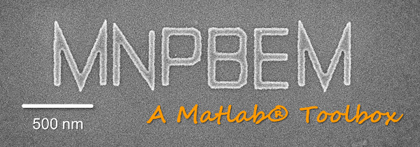

EELS simulation examples

The runtimes of the following programs are given for my not overly fast office computer (Intel i7-2600 CPU, 3.40 GHz, 8 GB RAM).
Contents
Quasistatic EELS simulation examples
- demoeelsstat1.m - Comparison BEM and Mie for EELS of metallic nanosphere (5 sec). info, run
- demoeelsstat2.m - EELS of nanosphere for different impact parameters (82 sec). info, run
- demoeelsstat3.m - EELS of nanodisk for different impact parameters (70 sec). info, run
Retarded EELS simulation examples
- demoeelsret1.m - Comparison BEM and Mie for EELS of metallic nanosphere (19 sec). info, run
- demoeelsret2.m - EELS of nanodisk for different impact parameters (96 sec). info, run
- demoeelsret3.m - Induced electric field for EELS of nanodisk (8 sec). info, run
- demoeelsret4.m - EELS of nanotriangle for different impact parameters (66 sec). info, run
- demoeelsret5.m - EELS maps of nanotriangle for selected loss energies (83 sec). info, run
- demoeelsret6.m - Electric field map for EELS of nanotriangle (51 sec). info, run
- demoeelsret7.m - EEL spectra for silver nanotriangle on membrane (9 min). info, run
- demoeelsret8.m - EELS maps for silver nanotriangle on membrane (6 min). info, run
- demoeelsret9.m - EEL spectra for coupled nanorods using iterative BEM solver (60 min). info, run
Copyright 2017 Ulrich Hohenester